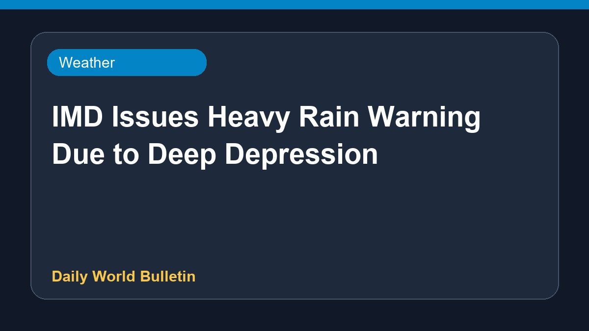

IMD Issues Heavy Rain Warning Due to Deep Depression

According to the latest weather reports, the India Meteorological Department has issued a warning for extremely heavy rainfall affecting two Indian states due to a deep depression. Authorities are closely monitoring the situation as severe weather conditions develop. At present, further specific details regarding the affected regions and precautionary measures are limited based on the available sources.
Original source: Weather News Sources
Deep Depression 2026: IMD warns of extremely heavy rain in these 2 Indian states - Moneycontrol.com ↗
Deep Depression 2026: IMD warns of extremely heavy rain in these 2 Indian states - Moneycontrol.com ↗